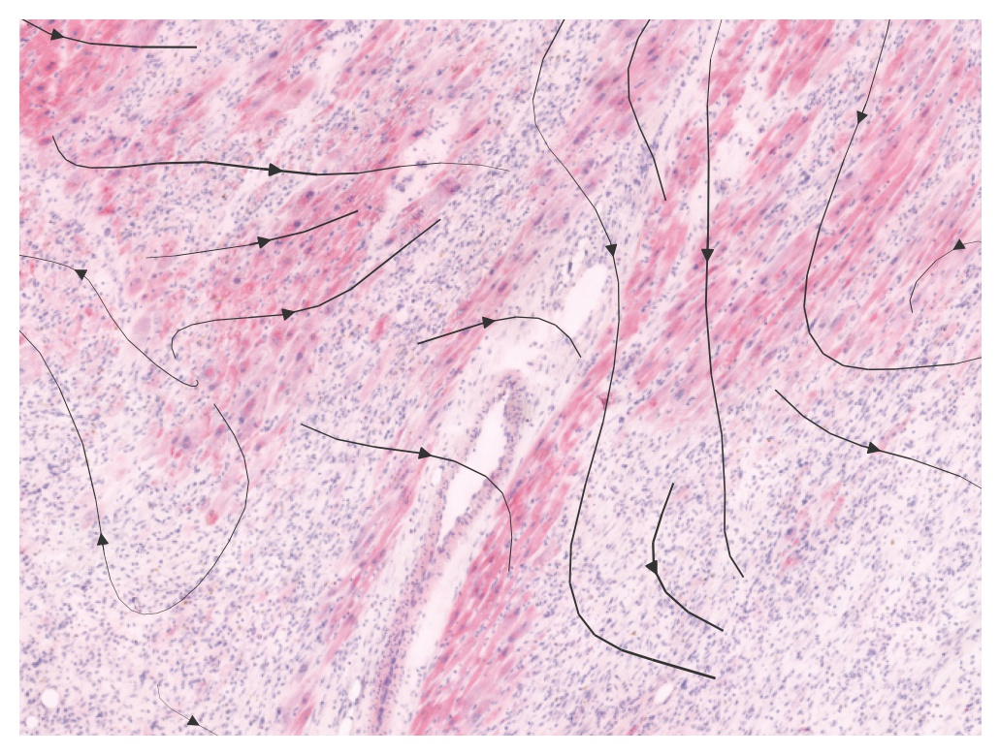
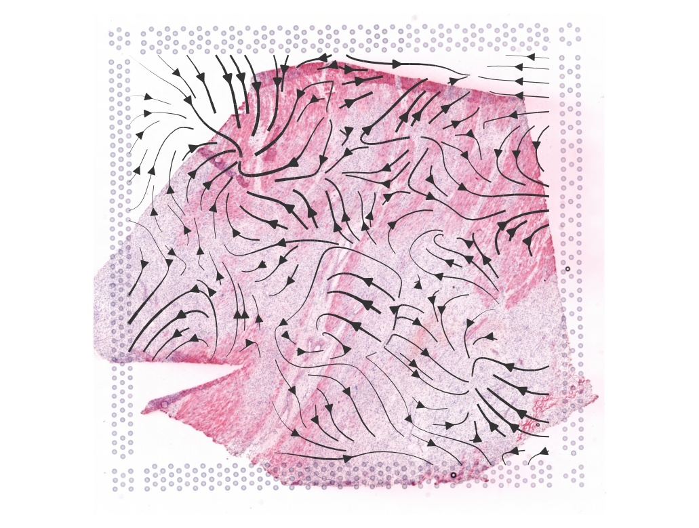

This page was generated from a Jupyter notebook. You can download the notebook
here to run it locally in Jupyter.
Cell cell communication
In this notebook, we show how to use Thor’s built in module to study cell-cell communication infer cell-level spatial transcriptome on a sample from human heart failure patients with myocardial infarction.
For installation of Thor, please refer to this installation guide.
[1]:
import sys
import os
import logging
import datetime
import numpy as np
import pandas as pd
import scanpy as sc
import seaborn as sns
import matplotlib.pyplot as plt
now = datetime.datetime.now()
print(f"Current Time: {now}")
here = os.getcwd()
print(f"Current Directory: {here}")
Current Time: 2025-02-03 14:43:46.021027
Current Directory: /Users/pengzhizhang/FINEST/notebooks/CCC_HF
[2]:
import commot as ct
import thor
from thor.analysis.ccc import split_pathways, run_commot, plot_commot
%config InlineBackend.figure_format = 'retina'
Load ligand-receptor database
[3]:
cc = ct.pp.ligand_receptor_database(database='CellChat', species='human')
cc
[3]:
| 0 | 1 | 2 | 3 | |
|---|---|---|---|---|
| 0 | TGFB1 | TGFBR1_TGFBR2 | TGFb | Secreted Signaling |
| 1 | TGFB2 | TGFBR1_TGFBR2 | TGFb | Secreted Signaling |
| 2 | TGFB3 | TGFBR1_TGFBR2 | TGFb | Secreted Signaling |
| 3 | TGFB1 | ACVR1B_TGFBR2 | TGFb | Secreted Signaling |
| 4 | TGFB1 | ACVR1C_TGFBR2 | TGFb | Secreted Signaling |
| ... | ... | ... | ... | ... |
| 1194 | UTS2B | UTS2R | UROTENSIN | Secreted Signaling |
| 1195 | UTS2B | SSTR5 | UROTENSIN | Secreted Signaling |
| 1196 | BAG6 | NCR3 | BAG | Secreted Signaling |
| 1197 | LGALS9 | HAVCR2 | GALECTIN | Secreted Signaling |
| 1198 | LGALS9 | CD44 | GALECTIN | Secreted Signaling |
1199 rows × 4 columns
[4]:
pathways_dict = split_pathways(cc, name_col_index=2)
pathways_dict['VEGF']
[4]:
| 0 | 1 | 2 | 3 | |
|---|---|---|---|---|
| 589 | VEGFA | FLT1 | VEGF | Secreted Signaling |
| 590 | VEGFA | KDR | VEGF | Secreted Signaling |
| 591 | VEGFB | FLT1 | VEGF | Secreted Signaling |
| 592 | VEGFC | FLT4 | VEGF | Secreted Signaling |
| 593 | VEGFC | KDR | VEGF | Secreted Signaling |
| 594 | VEGFD | FLT4 | VEGF | Secreted Signaling |
| 595 | VEGFD | KDR | VEGF | Secreted Signaling |
| 596 | PGF | FLT1 | VEGF | Secreted Signaling |
| 597 | VEGFA | FLT1_KDR | VEGF | Secreted Signaling |
| 598 | VEGFC | FLT4_KDR | VEGF | Secreted Signaling |
| 599 | VEGFD | FLT4_KDR | VEGF | Secreted Signaling |
Human Heart (spot level)
The heart failure tissue sample is downloaded from the study in a Nature paper “Spatial multi-omic map of human myocardial infarction”.
[5]:
sn = 'GT_IZ_P9_rep2'
ad_spot_path = f"{sn}_adata_spots_filtered_ref.h5ad"
ad = sc.read_h5ad(ad_spot_path)
[6]:
from thor.utils import convert_pixel_to_micron_visium
microns_per_pixel = convert_pixel_to_micron_visium(ad, res='fullres', spotDiameterinMicron=65)
distance = 100 # distance threshold in microns
distance_pixel = distance / microns_per_pixel
Use Thor’s API: run_commot for data preprocessing and run COMMOT
[7]:
database = 'CellChat'
pathway = 'VEGF'
ad_comm = run_commot(
ad,
database_name=database,
df_ligrec=pathways_dict[pathway],
dis_thr=distance_pixel,
heteromeric=True,
pathway_sum=True)
We can now check the directions of VEGF signals via a streamplot (spot level)
[8]:
plot_commot(ad_comm, database_name=database, pathway_name=pathway, plot_method='stream', background_legend=True,
scale=0.5, ndsize=8, grid_density=0.4, summary='sender', background='image', clustering='leiden', cmap='Alphabet',
normalize_v=True, normalize_v_quantile=0.995)
With the original spot data, VEGF signals are observed crossing a vessel region
[9]:
plot_commot(ad_comm, region=(4000, 5800, 3000, 5500), database_name=database, pathway_name=pathway, plot_method='stream', background_legend=True,
scale=0.5, ndsize=4, grid_density=0.4, summary='sender', background='image', clustering='leiden', cmap='Alphabet',
normalize_v=True, normalize_v_quantile=0.995)

Human Heart (cell level based on Thor)
Subsample 2 cells in every spot for efficiency
[10]:
ad_thor = sc.read_h5ad("GT_IZ_P9_rep2_adata_cells.h5ad")
ad_thor
[10]:
AnnData object with n_obs × n_vars = 48556 × 3059
obs: 'n_counts', 'n_genes', 'percent.mt', 'Adipocyte', 'Cardiomyocyte', 'Endothelial', 'Fibroblast', 'Lymphoid', 'Mast', 'Myeloid', 'Neuronal', 'Pericyte', 'Cycling.cells', 'vSMCs', 'cell_type_original', 'assay_ontology_term_id', 'cell_type_ontology_term_id', 'development_stage_ontology_term_id', 'disease_ontology_term_id', 'self_reported_ethnicity_ontology_term_id', 'is_primary_data', 'organism_ontology_term_id', 'sex_ontology_term_id', 'tissue_ontology_term_id', 'donor_id', 'suspension_type', 'cell_type', 'assay', 'disease', 'organism', 'sex', 'tissue', 'self_reported_ethnicity', 'development_stage', 'spot_barcodes', 'x', 'y', 'mean_gray', 'std_gray', 'entropy_img', 'mean_r', 'mean_g', 'mean_b', 'std_r', 'std_g', 'std_b', 'spot_heterogeneity', 'node_weights', 'imagerow', 'imagecol'
var: 'feature_is_filtered', 'feature_name', 'feature_reference', 'feature_biotype', 'highly_variable', 'means', 'dispersions', 'dispersions_norm', 'used_for_prediction', 'used_for_vae', 'used_for_reduced'
uns: 'X_approximate_distribution', 'cell_image_props', 'default_embedding', 'hvg', 'log1p', 'schema_version', 'snn', 'spatial', 'title'
obsm: 'X_pca', 'X_spatial', 'X_umap', 'spatial', 'spatial_distance'
obsp: 'snn_connectivities', 'snn_knn_connectivities', 'snn_transition_matrix'
[11]:
spot_barcodes = ad_thor.obs.spot_barcodes.drop_duplicates()
spot_barcodes = list(map(lambda x: str(x)+'-1', spot_barcodes)) + list(spot_barcodes)
ad_subsampled = ad_thor[ad_thor.obs.index.isin(spot_barcodes), :].copy()
ad_subsampled
[11]:
AnnData object with n_obs × n_vars = 8180 × 3059
obs: 'n_counts', 'n_genes', 'percent.mt', 'Adipocyte', 'Cardiomyocyte', 'Endothelial', 'Fibroblast', 'Lymphoid', 'Mast', 'Myeloid', 'Neuronal', 'Pericyte', 'Cycling.cells', 'vSMCs', 'cell_type_original', 'assay_ontology_term_id', 'cell_type_ontology_term_id', 'development_stage_ontology_term_id', 'disease_ontology_term_id', 'self_reported_ethnicity_ontology_term_id', 'is_primary_data', 'organism_ontology_term_id', 'sex_ontology_term_id', 'tissue_ontology_term_id', 'donor_id', 'suspension_type', 'cell_type', 'assay', 'disease', 'organism', 'sex', 'tissue', 'self_reported_ethnicity', 'development_stage', 'spot_barcodes', 'x', 'y', 'mean_gray', 'std_gray', 'entropy_img', 'mean_r', 'mean_g', 'mean_b', 'std_r', 'std_g', 'std_b', 'spot_heterogeneity', 'node_weights', 'imagerow', 'imagecol'
var: 'feature_is_filtered', 'feature_name', 'feature_reference', 'feature_biotype', 'highly_variable', 'means', 'dispersions', 'dispersions_norm', 'used_for_prediction', 'used_for_vae', 'used_for_reduced'
uns: 'X_approximate_distribution', 'cell_image_props', 'default_embedding', 'hvg', 'log1p', 'schema_version', 'snn', 'spatial', 'title'
obsm: 'X_pca', 'X_spatial', 'X_umap', 'spatial', 'spatial_distance'
obsp: 'snn_connectivities', 'snn_knn_connectivities', 'snn_transition_matrix'
Use Thor’s API: run_commot for data preprocessing and run COMMOT
[12]:
ad_thor_comm = run_commot(
ad_subsampled,
database_name=database,
df_ligrec=pathways_dict[pathway],
dis_thr=distance_pixel,
heteromeric=True,
pathway_sum=True)
We can now check the directions of VEGF signals via a streamplot (cell level)
[13]:
plot_commot(ad_thor_comm, database_name=database, pathway_name=pathway, plot_method='stream', background_legend=True,
scale=0.5, ndsize=4, grid_density=0.2, summary='sender', background='image', clustering='leiden', cmap='Alphabet',
normalize_v=True, normalize_v_quantile=0.995)

With Thor inferred data, VEGF signals are observed initialized from a vessel region, which makes more sense
[14]:
plot_commot(ad_thor_comm, region=(4000, 5800, 3000, 5500), database_name=database, pathway_name=pathway, plot_method='stream', background_legend=True,
scale=0.5, ndsize=4, grid_density=0.2, summary='sender', background='image', clustering='leiden', cmap='Alphabet',
normalize_v=True, normalize_v_quantile=0.995)
DEG along signaling pathways
[15]:
ad_thor_comm.layers['counts'] = np.expm1(ad_thor_comm.X)
df_deg, df_yhat = ct.tl.communication_deg_detection(
ad_thor_comm,
database_name=database,
pathway_name=pathway,
summary='receiver')
| | 0 % ~calculating |+ | 1 % ~01m 45s |++ | 2 % ~01m 37s |++ | 3 % ~01m 27s |+++ | 5 % ~01m 19s |+++ | 6 % ~01m 15s |++++ | 7 % ~01m 19s |++++ | 8 % ~01m 15s |+++++ | 9 % ~01m 13s |++++++ | 10% ~01m 15s |++++++ | 11% ~01m 15s |+++++++ | 12% ~01m 16s |+++++++ | 14% ~01m 13s |++++++++ | 15% ~01m 11s |++++++++ | 16% ~01m 09s |+++++++++ | 17% ~01m 07s |++++++++++ | 18% ~01m 08s |++++++++++ | 19% ~01m 06s |+++++++++++ | 20% ~01m 05s |+++++++++++ | 22% ~01m 04s |++++++++++++ | 23% ~01m 02s |++++++++++++ | 24% ~01m 01s |+++++++++++++ | 25% ~60s |++++++++++++++ | 26% ~59s |++++++++++++++ | 27% ~57s |+++++++++++++++ | 28% ~57s |+++++++++++++++ | 30% ~57s |++++++++++++++++ | 31% ~56s |++++++++++++++++ | 32% ~55s |+++++++++++++++++ | 33% ~54s |++++++++++++++++++ | 34% ~53s |++++++++++++++++++ | 35% ~52s |+++++++++++++++++++ | 36% ~51s |+++++++++++++++++++ | 38% ~50s |++++++++++++++++++++ | 39% ~49s |++++++++++++++++++++ | 40% ~48s |+++++++++++++++++++++ | 41% ~47s |++++++++++++++++++++++ | 42% ~46s |++++++++++++++++++++++ | 43% ~45s |+++++++++++++++++++++++ | 44% ~44s |+++++++++++++++++++++++ | 45% ~44s |++++++++++++++++++++++++ | 47% ~43s |++++++++++++++++++++++++ | 48% ~42s |+++++++++++++++++++++++++ | 49% ~41s |+++++++++++++++++++++++++ | 50% ~40s |++++++++++++++++++++++++++ | 51% ~39s |+++++++++++++++++++++++++++ | 52% ~38s |+++++++++++++++++++++++++++ | 53% ~38s |++++++++++++++++++++++++++++ | 55% ~37s |++++++++++++++++++++++++++++ | 56% ~36s |+++++++++++++++++++++++++++++ | 57% ~35s |+++++++++++++++++++++++++++++ | 58% ~34s |++++++++++++++++++++++++++++++ | 59% ~33s |+++++++++++++++++++++++++++++++ | 60% ~32s |+++++++++++++++++++++++++++++++ | 61% ~31s |++++++++++++++++++++++++++++++++ | 62% ~30s |++++++++++++++++++++++++++++++++ | 64% ~29s |+++++++++++++++++++++++++++++++++ | 65% ~28s |+++++++++++++++++++++++++++++++++ | 66% ~27s |++++++++++++++++++++++++++++++++++ | 67% ~26s |+++++++++++++++++++++++++++++++++++ | 68% ~25s |+++++++++++++++++++++++++++++++++++ | 69% ~24s |++++++++++++++++++++++++++++++++++++ | 70% ~24s |++++++++++++++++++++++++++++++++++++ | 72% ~23s |+++++++++++++++++++++++++++++++++++++ | 73% ~22s |+++++++++++++++++++++++++++++++++++++ | 74% ~21s |++++++++++++++++++++++++++++++++++++++ | 75% ~20s |+++++++++++++++++++++++++++++++++++++++ | 76% ~19s |+++++++++++++++++++++++++++++++++++++++ | 77% ~18s |++++++++++++++++++++++++++++++++++++++++ | 78% ~17s |++++++++++++++++++++++++++++++++++++++++ | 80% ~16s |+++++++++++++++++++++++++++++++++++++++++ | 81% ~15s |+++++++++++++++++++++++++++++++++++++++++ | 82% ~14s |++++++++++++++++++++++++++++++++++++++++++ | 83% ~14s |+++++++++++++++++++++++++++++++++++++++++++ | 84% ~13s |+++++++++++++++++++++++++++++++++++++++++++ | 85% ~12s |++++++++++++++++++++++++++++++++++++++++++++ | 86% ~11s |++++++++++++++++++++++++++++++++++++++++++++ | 88% ~10s |+++++++++++++++++++++++++++++++++++++++++++++ | 89% ~09s |+++++++++++++++++++++++++++++++++++++++++++++ | 90% ~08s |++++++++++++++++++++++++++++++++++++++++++++++ | 91% ~07s |+++++++++++++++++++++++++++++++++++++++++++++++ | 92% ~06s |+++++++++++++++++++++++++++++++++++++++++++++++ | 93% ~05s |++++++++++++++++++++++++++++++++++++++++++++++++ | 94% ~04s |++++++++++++++++++++++++++++++++++++++++++++++++ | 95% ~04s |+++++++++++++++++++++++++++++++++++++++++++++++++ | 97% ~03s |+++++++++++++++++++++++++++++++++++++++++++++++++ | 98% ~02s |++++++++++++++++++++++++++++++++++++++++++++++++++| 99% ~01s |++++++++++++++++++++++++++++++++++++++++++++++++++| 100% elapsed=01m 18s
2 parameter combinations, 2 use sequential method, 2 use subsampling method
Running Clustering on Parameter Combinations...
done.
[16]:
df_deg_clus, df_yhat_clus = ct.tl.communication_deg_clustering(df_deg, df_yhat, deg_clustering_res=0.1)
top_de_genes_VEGF = ct.pl.plot_communication_dependent_genes(
df_deg_clus,
df_yhat_clus,
top_ngene_per_cluster=5,
filename='./heatmap_deg_VEGF.pdf',
font_scale=1.2,
return_genes=True)
[17]:
def plot_genes(adata_dis500, pathway, genes, database=None):
X_sc = adata_dis500.obsm['spatial']
fig, ax = plt.subplots(1,3, figsize=(15,4))
colors = adata_dis500.obsm[f'commot-{database}-sum-sender'][f's-{pathway}'].values
idx = np.argsort(colors)
ax[0].scatter(X_sc[idx,0],X_sc[idx,1], c=colors[idx], cmap='coolwarm', s=2)
colors = adata_dis500[:,genes[0]].X.toarray().flatten()
idx = np.argsort(colors)
ax[1].scatter(X_sc[idx,0],X_sc[idx,1], c=colors[idx], cmap='coolwarm', s=2)
colors = adata_dis500[:,genes[1]].X.toarray().flatten()
idx = np.argsort(colors)
ax[2].scatter(X_sc[idx,0],X_sc[idx,1], c=colors[idx], cmap='coolwarm', s=2)
ax[0].set_title('Amount of received signal')
ax[1].set_title(f'An example negative DE gene ({genes[0]})')
ax[2].set_title(f'An example positive DE gene ({genes[1]})')
ax[0].invert_yaxis()
ax[1].invert_yaxis()
ax[2].invert_yaxis()
plt.show()
plot_genes(ad_thor_comm, pathway, ['MELTF', 'IGFBP5'], database=database)
[ ]: